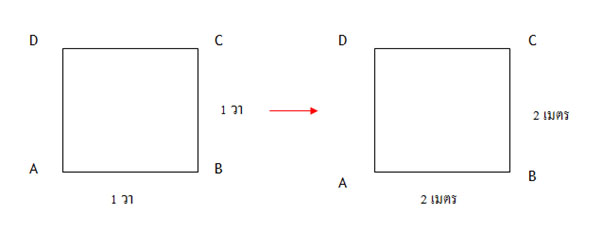
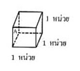

การวัด
ในสมัยโบราณบรรพบุรุษของเรายังไม่มีเครื่องมือที่เป็นมาตรฐานเกี่ยวกับการวัดรยะยะทาง เวลา พื้นที่ และปริมาตร การสื่อความหมายเกี่ยวกับการวัดของคนสมัยนั้นอาศัยสิ่งแวดล้อมตามธรรมชาติ หรือกิจกรรมที่ทำกันเป็นกิจวัตรเป็นเครื่องมือในการบอกระยะทาง เวลา พื้นที่ และปริมาตร ซึ่งเป็นการสื่อความหมายเกี่ยวกับการวัดที่ได้จากการสังเกตและการคาดคะเนอย่างหยาบ ๆ ทำให้บางครั้งเกิดปัญหาการสื่อความหมายไม่ตรงกัน
ความเป็นมาของการวัด
ในสมัยโบราณบรรพบุรุษของเรายังไม่มีเครื่องมือที่เป็นมาตรฐานเกี่ยวกับการวัดรยะยะทาง เวลา พื้นที่ และปริมาตร การสื่อความหมายเกี่ยวกับการวัดของคนสมัยนั้นอาศัยสิ่งแวดล้อมตามธรรมชาติ หรือกิจกรรมที่ทำกันเป็นกิจวัตรเป็นเครื่องมือในการบอกระยะทาง เวลา พื้นที่ และปริมาตร ซึ่งเป็นการสื่อความหมายเกี่ยวกับการวัดที่ได้จากการสังเกตและการคาดคะเนอย่างหยาบๆ ทำให้บางครั้งเกิดปัญหาการสื่อความหมายไม่ตรงกัน เช่น
การสื่อความหมายเกี่ยวกับระยะทาง
- บ้านกำนันอยู่ห่างจากบ้านของเราประมาณสองคุ้งน้ำ
- ที่นาของป้าจันทร์อยู่ห่างจากที่นี่ชั่วเวลาเคี้ยวหมากจืดสนิทพอดี
- วัดอยู่ไม่ไกลหรอก แค่เดินไปชั่วหม้อข้าวเดือดเท่านั้น
- หมู่บ้านนาโต่งอยู่ไกลจากที่นี่เท่ากับเสียงช้างร้อง
การสื่อความหมายเกี่ยวกับเวลา
- ให้ออกจากบ้านก่อนพระอาทิตย์ขึ้น
- ตื่นนอนตอนไก่ขัน
- กลับเถอะ นกบินกลับรังแล้ว
การสื่อความหมายเกี่ยวกับปริมาณอื่น ๆ
- มีทองเท่าหนวดกุ้ง
- หุงข้าวสักสองกำมือ
- ใช้เกลือสักหยิบมือหนึ่ง
- หัวใจเท่ากำปั้น
การสื่อความหมายเกี่ยวกับการวัดได้มีวิวัฒนาการมาเรื่อย ๆ ตามยุคสมัย เมื่อมีการติดต่อไปมาระหว่างชุมชน มีการซื้อแลกเปลี่ยน ทำให้ต้องมีหน่วยการวัดและเครื่องมือที่ใช้วัดที่ชัดเจนเพื่อสื่อความหมายได้ตรงกันมากขึ้น เช่น หน่วยการบอกเวลาเป็นทุ่ม และหน่วยการตวงเป็นทะนาน ต่อมาหน่วยการวัดและเครื่องมือที่ใช้วัดได้พัฒนาเรื่อยมาจนเป็นมาตรฐานที่ใช้กันอยู่ทุกวันนี้ สำหรับการวัดความยาวมีวิวัฒนาการเป็นลำดับคร่าวๆ ตามที่เห็นได้ชัดเจนมีดังนี้
ดังที่ได้กล่าวมาแล้วข้างต้นว่าการบอกระยะทางใกล้ ไกล ของคนไทยในสมัยโบราณ เป็นการบอกระยะทางอย่างหยาบๆ ซึ่งอาจทำให้เข้าใจไม่ตรงกัน ต่อมาเมื่อชุมชนมีการคมนาคมติดต่อแลกเปลี่ยนซื้อขายกันมากขึ้น จึงได้พัฒนาหน่วยการวัดและเครื่องมือที่ใช้วัดให้เกิดความเข้าใจตรงกันในวงกว้างขึ้น ในระยะแรกๆ มีการใช้ส่วนต่างๆ ของร่างกายเป็นเกณฑ์อ้างอิง เช่น น้ำลึก 2 ศอก ผ้ากว้าง 3 ผืน ไม้กระดานยาว 4 วา แต่การใช้คืบ ศอก และวาเพื่อบอกระยะทางก็ยังไม่ชัดเจนอยู่ดี เพราะ คืบ ศอก และวาของแต่ละชุมชนที่ใช้กันมักยาวไม่เท่ากัน ต่อมาจึงได้พัฒนาหน่วยการวัดและเครื่องมือที่ใช้วัดให้เป็นมาตรฐานสากล ซึ่งมาตรฐานสากลที่นิยมใช้กัน มีดังนี้
ระบบอังกฤษ กำหนดหน่วยความยาวเป็น นิ้ว ฟุต หลา และไมล์ เป็นต้น
ระบบเมตริก ถือกำเนิดเมื่อ พ.ศ. 2336 ที่ประเทศฝรั่งเศส กำหนดหน่วยความยาวเป็น เซนติเมตร เมตร และกิโลเมตร เป็นต้น
สำหรับประเทศไทยเมื่อ พ.ศ. 2466 ได้ประกาศใช้พระราชบัญญัติมาตราชั่งตวงวัด โดยใช้หน่วยการวัดของระบบเมตริก ร่วมกับหน่วยการวัดที่เป็นประเพณีไทยบางหน่วยซึ่งได้ปรับเทียบเข้าหาระบบเมตริกแล้ว พระราชบัญญัตินี้กำหนดไว้เฉพาะหน่วยการวัดความยาว พื้นที่ ปริมาตร และมวล ซึ่งมุ่งประสงค์สำหรับไว้ใช้โดยเฉพาะในการซื้อขาย เช่น
2 ศอก เท่ากับ 1 เมตร
1 ไร่ เท่ากับ 1,600 ตารางเมตร
1 บาทเท่ากับ 15 กรัม
เมื่อ พ.ศ. 2503 องค์การระหว่างประเทศว่าด้วยการมาตรฐาน (International Organization for Standardization หรือชื่อย่อ ISO) ได้กำหนดให้มีระบบการวัดใหม่ขึ้น เพื่อใช้ในการวัดทางวิทยาศาสตร์และเทคโนโลยีให้เป็นระบบเดียวกันทั่วโลก เรียกว่า ระบบหน่วยระหว่างประเทศ และเรียกหน่วยการวัดในระบบนี้ว่า หน่วย SI
หน่วยรากฐานของระบบ SI มี 7 หน่วย ที่ใช้วัดปริมาณมูลฐาน ได้แก่
เมตร เป็นหน่วยใช้วัดความยาว
กิโลกรัม เป็นหน่วยใช้วัดมวล
วินาที เป็นหน่วยใช้วัดเวลา
แอมแปร์ เป็นหน่วยใช้วัดกระแสไฟฟ้า
เคลวิน เป็นหน่วยใช้วัดอุณหภูมิ
แคนเดลา เป็นหน่วยใช้วัดความเข้มของการส่องสว่าง
โมล เป็นหน่วยใช้วัดปริมาณของสาร
นอกจากเราจะมีหน่วยการวัดที่เป็นมาตรฐานสากลแล้ว เครื่องมือที่ใช้วัดก็มีความสำคัญมากเช่นกัน กล่าวคือจะตองเป็นเครื่องมือวัดที่ได้มาตรฐาน ค่าที่วัดได้ทุกครั้งจะต้องมีความเที่ยงตรง
ถึงแม้ว่าจะมีการพัฒนาหน่วยการวัดและเครื่องมือที่ใช้วัดให้มีความเที่ยงตรงเป็นมาตรฐานเพียงใดก็ตาม ค่าที่วัดได้เหล่านั้นก็เป็นเพียงค่าประมาณที่ได้จากการวัด ตามหน่วยการวัดที่เหมาะสมเท่านั้น เช่น อาจวัดเป็นจำนวนเต็มที่ใกล้เคียงที่สุด วัดเป็นทศนิยมหนึ่งตำแหน่งที่ใกล้เคียงที่สุด หรือวัดเป็นทศนิยมสองตำแหน่งที่ใกล้เคียงที่สุด ในการวัดจะวัดให้ละเอียดเพียงใดขึ้นอยู่กับจุดประสงค์ของการใช้งาน เช่น ถ้าต้องการวัดตัวเพื่อตัดเสื้อก็ต้องวัดให้ละเอียดเป็นเซนติเมตร หรือมิลลิเมตร แต่ถ้าต้องการวัดระยะไกลๆ ก็อาจวัดให้ละเอียดเป็นกิโลเมตรหรือเป็นเมตรก็เพียงพอแล้ว
อย่างไรก็ตามในชีวิตประจำวันเราไม่อาจนำเครื่องมือที่ใช้วัดไปใช้ในทุกสถานที่ ทุกเวลาได้ จำเป็นต้องประมาณความยาวหรือปริมาณของสิ่งต่างๆ ที่ต้องการทราบ การบอกค่าประมาณของปริมาณของสิ่งต่างๆ โดยไม่ได้วัดจริง เรียกว่า การคาดคะเน ค่าที่ได้จากการคาดคะเนจะใกล้เคียงกันที่แท้จริงมากน้อยเพียงใด ขึ้นอยู่กับประสบการณ์และทักษะของผู้คาดคะเนที่สามารถใช้ปริมาณของสิ่งที่คุ้นเคยมาเป็นตัวเทียบขนาดกับสิ่งที่ต้องการคาดคะเน เช่น มีความคุ้นเคยกับสิ่งที่มีความยาวประมาณ 1 เมตร ก็จะใช้ความยาวประมาณ 1 เมตรนั้น เป็นตัวเทียบเคียงกับความยาวของสิ่งที่ต้องการหาความยาว ใช้ความสูงของนักเรียนเป็นตัวเทียบเคียงหาความสูงของเพื่อน ใช้อัตราเร็วและเวลาในการขับรถ เป็นตัวเทียบเคียงเพื่อบอกระยะทาง
การวัดความยาว
หน่วยการวัดความยาวที่นิยมใช้กันในประเทศไทย ได้แก่ หน่วยการวัดความยาวในระบบเมตริก ระบบอังกฤษ และมาตราไทย หน่วยการวัดความยาวที่สำคัญซึ่งนักเรียนควรรู้จักมีดังนี้
หน่วยการวัดความยาวในระบบเมตริก
10 มิลลิเมตร เท่ากับ 1 เซนติเมตร
100 เซนติเมตร เท่ากับ 1 เมตร
1,000 เมตร เท่ากับ 1 กิโลเมตร
หน่วยการวัดความยาวในระบบอังกฤษ
11 นิ้วเท่ากับ 1 ฟุต
3 ฟุต เท่ากับ 1 หลา
1,760 หลา เท่ากับ 1 ไมล์
หน่วยการวัดความยาวในมาตราไทย
12 นิ้ว เท่ากับ 1 คืบ
2 คืบ เท่ากับ 1 ศอก
4 ศอก เท่ากับ 1 วา
20 วา เท่ากับ 1 เส้น
400 เส้น เท่ากับ 1 โยชน์
หน่วยการวัดความยาวในระบบอังกฤษเทียบกับระบบเมตริก (โดยประมาณ)
1 นิ้ว เท่ากับ 2.54 เซนติเมตร
1 หลา เท่ากับ 0.9144 เมตร
1 ไมล์ เท่ากับ 1.6093 กิโลเมตร
เราอาจเปลี่ยนหน่วยการวัดความยาวในระบบเดียวกันและต่างระบบกันได้ตามหน่วยการวัดความยาวดังกล่าวข้างต้น ดังตัวอย่าง
ตัวอย่าง
คุณป้ามาลีสูง 155 เซนติเมตร อยากทราบว่าคุณป้ามาสูงกี่เมตร
เนื่องจาก 100 เซนติเมตร เท่ากับ 1 เมตร และคุณป้ามาลีสูง 155 เซนติเมตร
ดังนั้น คุณป้ามาลีสูง 155/100 = 1.55 เมตร
จากบทที่ผ่านมาเราทราบมาแล้วว่า เราใช้พื้นที่ในการบอกขนาดของเนื้อที่ เช่น ต้องการบอกขนาดของเนื้อที่นา
หรือเนื้อที่ของสนามหญ้า ซึ่งต้องคำนวณหาพื้นที่และบอกเป็นหน่วยการวัดพื้นที่
ตัวอย่าง เจ้าหน้าที่รังวัดที่ดินรังวัดที่นาของลุงแดง
แล้วคำนวณได้พื้นที่โดยประมาณเป็น 10 ไร่ 2 งาน 15 ตารางวา
นักเรียนคุ้นเคยมาแล้วกับการวัดพื้นที่และใช้หน่วยการวัดพื้นที่ในระบบเมตริก
และมาตราไทยซึ่งใช้หน่วยการวัดพื้นที่เป็นตารางหน่วย หรือ หน่วย2 ตามหน่วยการวัดความยาว เช่น
ในบางสถานการณ์นักเรียนอาจพบเห็นการใช้หน่วยการวัดพื้นที่ในระบบอังกฤษ ซึ่งใช้หน่วยการวัดพื้นที่เป็นตารางหน่วย ตามหน่วยการวัดความยาวในระบบอังกฤษ เช่น ตารางนิ้ว และตารางฟุต
การเปลี่ยนหน่วยการวัดพื้นที่ในระบบหรือมาตราเดียวกัน สามารถคำนวณได้จากการเปลี่ยนหน่วยการวัดความยาวตามความสัมพันธ์ของหน่วยในระบบหรือมาตรานั้น ดังตัวอย่าง
ตัวอย่าง สี่เหลี่ยม ABCD เป็นรูปสี่เหลี่ยมจัตุรัส มีพื้นที่เป็น 1 ตารางเมตร เมื่อต้องการเปลี่ยนหน่วยเป็นตารางเซนติเมตร ทำได้ดังนี้

เนื่องจากความยาว 1 เมตร เท่ากับ 100 เซนติเมตร
ดังนั้น พื้นที่ 1 × 1 ตารางเมตร เท่ากับ 100 × 100 ตารางเซนติเมตร
นั่นคือ พื้นที่ 1 ตารางเมตร เท่ากับ 10,000 หรือ 104 ตารางเซนติเมตร
ในชีวิตประจำวันเรายังมีความจำเป็นต้องมีการซื้อขายที่ดิน ซึ่งการคิดพื้นที่ของไทยยังนิยมบอกพื้นที่เป็นหน่วยในมาตราไทย เช่น ไร่ งาน และตารางวา แต่ในการจ้างเหมาซื้อดินมาถมที่ บางครั้งผู้รับเหมาจะคำนวณความยาว และพื้นที่เป็นหน่วยในระบบเมตริก เป็นตารางเมตร หรือคำนวณปริมาตร เป็นลูกบาศก์เมตร ดังนั้นเพื่อให้เป็นประโยชน์ในการใช้งานจึงต้องมีการเปรียบเทียบหน่วยระหว่างระบบหรือมาตรา
ตัวอย่าง สี่เหลี่ยม ABCD เป็นรูปสี่เหลี่ยมจัตุรัส มีพื้นที่เป็น 1 ตารางวา เมื่อต้องการเปลี่ยนหน่วยเป็นตารางเมตร ทำได้ดังนี้

เนื่องจากความยาว 1 วา เท่ากับ 2 เมตร
ดังนั้น พื้นที่ 1 × 1 ตารางวา เท่ากับ 2 × 2 ตารางเมตร
นั่นคือ พื้นที่ 1 ตารางวา เท่ากับ 4 ตารางเมตร
หน่วยการวัดพื้นที่ในระบบเมตริก
1 ตารางเซนติเมตร เท่ากับ 100 หรือ 102 ตารางเซนติเมตร
1 ตารางเมตร เท่ากับ 10,000 หรือ 104 ตารางเซนติเมตร
1 ตารางกิโลเมตร เท่ากับ 1,000,000 หรือ 105 ตารางเมตร
หน่วยการวัดพื้นที่ในระบบอังกฤษ
1 ตารางฟุต เท่ากับ 144 หรือ 122 ตารางนิ้ว
1 ตารางหลา เท่ากับ 9 หรือ 32 ตารางฟุต
1 เอเคอร์ เท่ากับ 4,840 ตารางหลา
1 ตารางไมล์ เท่ากับ 640 เอเคอร์
หน่วยการวัดพื้นที่ในมาตราไทย
100 ตารางวา เท่ากับ 1 งาน
4 งาน เท่ากับ 1 ไร่
400 ตารางวา เท่ากับ 1 ไร่
หน่วยการวัดพื้นที่ในมาตราไทยเทียบกับระบบเมตริก
1 ตารางวา เท่ากับ 4 ตารางเมตร
1 งาน เท่ากับ 400 ตารางเมตร
1 ไร่ เท่ากับ 1,600 ตารางเมตร
1 ตารางกิโลเมตร เท่ากับ 625 ไร่
หน่วยการวัดพื้นที่ในระบบอังกฤษเทียบกับระบบเมตริก (โดยประมาณ)
1 ตารางนิ้ว เท่ากับ 6.4516 ตารางเซนติเมตร
1 ตารางฟุต เท่ากับ 0.0929 ตารางเมตร
1 ตารางหลา เท่ากับ 0.8361 ตารางเมตร
1 เอเคอร์ เท่ากับ 4046.856 ตารางเมตร(2.529 ไร่)
1 ตารางไมล์ เท่ากับ 2.5899 ตารางกิโลเมตร
ในการเปรียบเทียบพื้นที่ที่มีหน่วยการวัดพื้นที่ต่างระบบหรือต่างมาตรา จำเป็นต้องทำให้มีหน่วยการวัดพื้นที่เป็นอย่างเดียวกันก่อน
จากบทก่อน ๆ เราทราบมาแล้วว่าเราใช้หน่วยการวัดปริมาตรเป็น ลูกบาศก์หน่วย หรือ หน่วย3 ตามหน่วยของความยาวที่ใช้ในสถานการณ์นั้น เช่น

1 ลูกบาศก์เซนติเมตร หมายถึง ทรงสี่เหลี่ยมมุมฉากที่มีความกว้าง ความยาว และความสูงเป็น 1 เซนติเมตร
เท่ากัน
หน่วยการวัดปริมาตรและน้ำหนักที่สำคัญ ซึ่งนักเรียนควรรู้จักมีดังนี้
1 ลูกบาศก์เซนติเมตร เท่ากับ 1,000 หรือ 103 ลูกบาศก์มิลลิเมตร
1 ลูกบาศก์เมตร เท่ากับ 1,000,000 หรือ 106 ลูกบาศก์เซนติเมตร
1 ลูกบาศก์เซนติเมตร เท่ากับ 1 มิลลิลิตร
1 ลิตร เท่ากับ 1,000 หรือ 103 มิลลิลิตร
1 ลิตร เท่ากับ 1,000 หรือ 103 ลูกบาศก์เซนติเมตร
1,000 ลิตร เท่ากับ 1 ลูกบาศก์เมตร
3 ช้อนชา เท่ากับ 1 ช้อนโต๊ะ
16 ช้อนโต๊ะ เท่ากับ 1 ถ้วยตวง
1 ถ้วยตวง เท่ากับ 8 ออนซ์
1 ช้อนชา เท่ากับ 5 ลูกบาศก์เซนติเมตร
1 ถ้วยตวง เท่ากับ 240 ลูกบาศก์เซนติเมตร
1 กรัม เท่ากับ 1,000 หรือ 103 มิลลิกรัม
1 กิโลกรัม เท่ากับ 1,000 หรือ 103 กรัม
1 เมตริกตัน(ตัน) เท่ากับ 1,000 หรือ 103 กิโลกรัม
1 กิโลกรัม เท่ากับ 2.2046 ปอนด์
1 ปอนด์ เท่ากับ 0.4536 กิโลกรัม
กระทรวงพาณิชย์ได้กำหนดการเทียบหน่วยการตวงระบบประเพณีไทยกับระบบเมตริกเพื่อการซื้อขาย คือ กำหนดให้
ข้าวสาร 1 ถัง มีน้ำหนัก 15 กิโลกรัม
ข้าวสาร 1 กระสอบ มีน้ำหนัก 100 กิโลกรัม
ในสมัยโบราณมนุษย์เห็นดวงอาทิตย์ขึ้นก็รู้ว่าวันใหม่เริ่มขึ้นแล้ว และการบอกเวลาว่าเป็นเช้า สาย บ่าย หรือเย็นก็อาจดูจากความยาวของเงาที่เปลี่ยนไป ทำให้เกิดแนวคิดในการกำหนดเวลา 1 วัน ว่าเป็นเวลาที่โลกหมุนรอบตัวเองครบ 1 รอบพอดี เมื่อมนุษย์ได้เรียนรู้ทางดาราศาสตร์มากขึ้น จึงมีแนวคิดในการกำหนดเวลา 1 ปีทางสุริยคติ ว่าเป็นเวลาที่โลกโคจรรอบดวงอาทิตย์ครบ 1 รอบพอดี ต่อมานักดาราศาสตร์ได้พบว่า เวลาที่โลกโคจรรอบดวงอาทิตย์ครบ 1 รอบเป็นเวลามากกว่า 365 วันเล็กน้อย ระบบปฏิทินในสมัยแรกๆที่นิยมใช้กันได้แก่ระบบปฏิทินจูเลียน ระบบนี้จึงกำหนดว่า 1 ปีมี 365.25 วัน เมื่อใช้ไปได้ระยะหนึ่ง พบว่า การใช้ปฏิทินนี้ในทุกๆ 400 ปี จะนับวันมากเกินความจริงไป 3 วันเศษ หลังจากนั้นจึงได้มีการปรับปรุงเป็นระบบปฏิทินแกรกอเรียน ใน ค.ศ. 1582 ซึ่งเป็นระบบปฏิทินที่ใช้กันอยู่ทั่วโลกในปัจจุบันและมีความเคลื่อนจากความจริงทางดาราศาสตร์น้อยที่สุด
ระบบปฏิทินแกรกอเรียน กำหนดให้ 1 ปี มี 365.2425 วัน โดยกำหนดเงื่อนไขว่าในปีปกตินั้น 1 ปีมี 365 วัน แต่ในปีอธิกสุรทิน ซึ่งเป็นปีที่เดือนกุมภาพันธ์มี 29 วันนั้น 1 ปี มี 366 วัน
1. ถ้าปี ค.ศ. ใดหารด้วย 4 ไม่ลงตัว จะไม่เป็นปีอธิกสุรทิน
2. ถ้าปี ค.ศ. ใด หารด้วย 4 ลงตัวและหารด้วย 100 ลงตัว แต่หารด้วย 400 ไม่ลงตัว ปี ค.ศ.
นั้นจะไม่เป็นปีอธิกสุรทิน
3. ถ้าปี ค.ศ. ใดหารด้วย 4 ลงตัว แต่หารด้วย 100 ไม่ลงตัวปี ค.ศ. นั้น จะเป็นปีอธิกสุรทิน
4. ถ้าปี ค.ศ. ใดหารด้วย 4 ลงตัวและหารด้วย 400 ลงตัว ปี ค.ศ. นั้น จะเป็นปีอธิกสุรทิน
ในการกำหนดเวลา มีข้อตกลงว่า 1 วัน มี 24 ชั่วโมง 1 ชั่วโมง มี 60 นาที และ 1 นาทีมี 60 วินาที ในชีวิตประจำวันของนักเรียน การตรงต่อเวลาเป็นเรื่องสำคัญมากเรื่องหนึ่ง เราจึงจำเป็นต้องเข้าใจตรงกันว่าเป็นเวลาใด ในการที่จะรู้ว่าเป็นเวลาใดนั้น นอกจากจะดูจากนาฬิกาโดยตรงแล้ว บางครั้งก็อาจต้องมีการคำนวณเวลามาเกี่ยวข้องด้วย